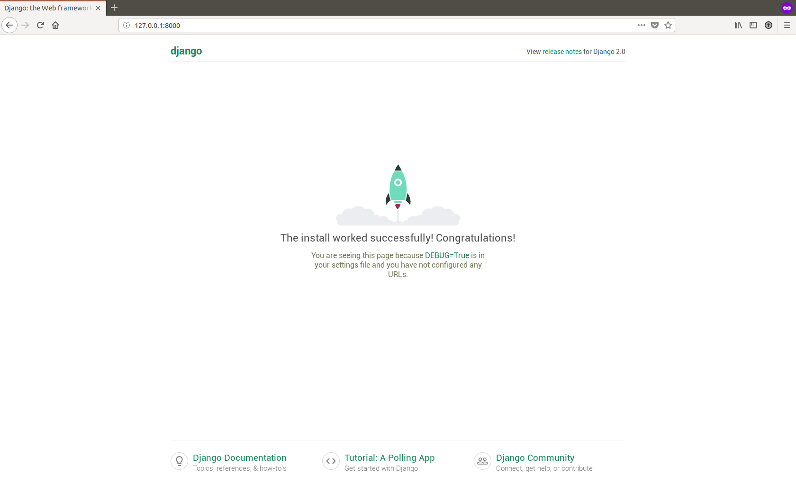

What is Django?
Django is a web framework that is built in Python and allows Rapid Application Development (RAD). A lot of the heavyweight stuff that a developer would have to handle if the website were being developed from scratch is taken care of by Django. This lets the developer focus on application building instead of worrying about other stuff such as making the website secure. You can find more details at the official website .
Getting started.
It is recommended that virtual environment be used for the following tutorial for a lot of reasons but is not compulsory and can be ignored.Setting it up.
$ virtualenv --python=python3 venvThis will create a directory named venv in the present directory. All the necessary files required for the virtual environment will be listed in that directory. Also, we made sure that we use python 3.5+. Now, to start/activate the virtual environment, all you need to do is:
$ source ./venv/bin/activateYou should see a modified control prompt which would look like this:
(venv)$
This confirms that our virtual environment is good and ready to go.
Now, we can start installing the stuff that we need for our django project.
First, we install django:
(venv)$ pip install djangoThis will install django for us. To test that, we can run django-admin --version. The result should be 2.0.6.
(venv)$ django-admin --version
2.0.6
Now we are getting to the good stuff...
First, let us create a new project using django-admin command:
$ django-admin startproject tutorial
This will create a folder structure that is something like this:
tutorial//
|-- manage.py*
`-- tutorial//
|-- __init__.py
|-- settings.py
|-- urls.py
`-- wsgi.pyAt this point, the project is barebones. If you want to see how this barebones project looks like in the browser, you can run the following command at the terminal:
$ django-admin manage.py runserver
Performing system checks...
System check identified no issues (0 silenced).
You have 14 unapplied migration(s). Your project may not work properly
until you apply the migrations for app(s): admin, auth,
contenttypes, sessions.
Run 'python manage.py migrate' to apply them.
June 04, 2018 - 18:12:08
Django version 2.0.6, using settings 'tutorial.settings'
Starting development server at http://127.0.0.1:8000/
Quit the server with CONTROL-C. Don't worry about the warning about unapplied migrations.
We will deal with them later. For now open up a browser (Firefox or Chrome
is preferred) and go to the address as listed in the output from our command
earlier: http://127.0.0.1:8000/. You should see a default welcome page:

Now that we have got our basic project up and running, we can start with an application.